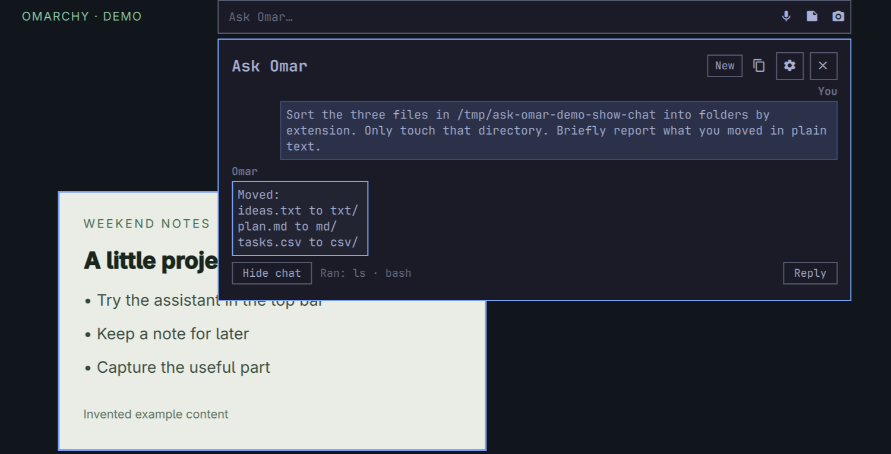
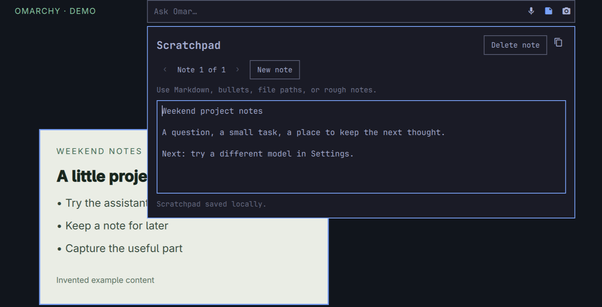
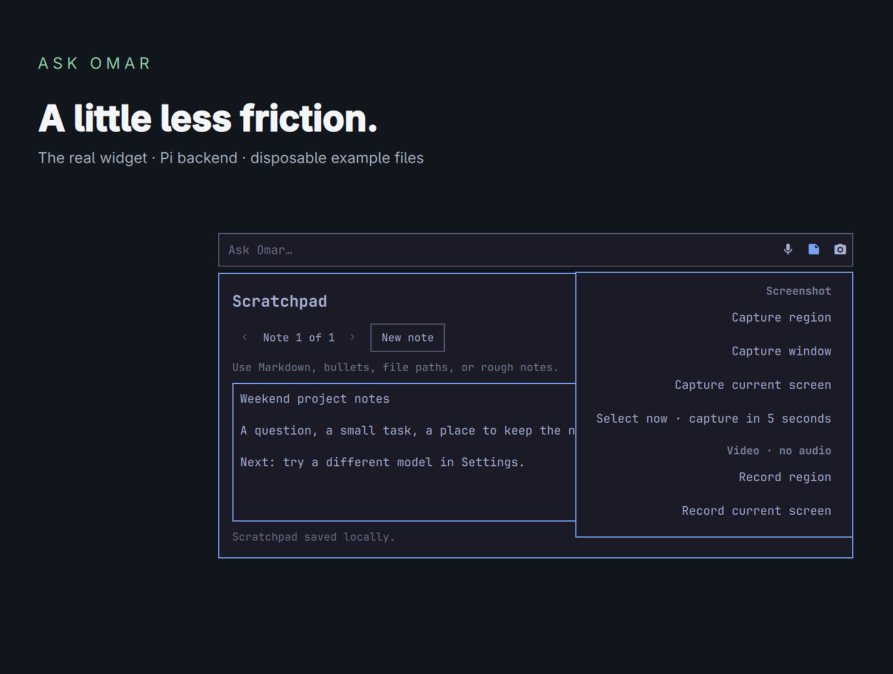

Desktop agent
Ask, then follow up.
Get help with Omarchy or ask the agent to handle a bounded desktop task. Follow-ups share a conversation until you start a new one or it expires after idle time.
For Omarchy
Ask Omar lives in Omarchy’s top menubar. Ask a question right there; answers open in a panel beneath it. Keep a note or start a desktop task without opening another terminal.
Experimental 0.1.1. AI requests use Pi and your chosen provider; notes and capture work without Pi.

A quick look
The input, mic, notes and capture controls live in the top menubar. A panel opens below for answers and follow-ups, then closes when you’re done.
A typed question asks how to open a terminal, browser and file manager in Omarchy. A typed follow-up asks for a short cheat sheet and the official guide. The answer is copied into a new Scratchpad note and saved locally. Returning to the same conversation, the user asks Omar to open the guide in the browser. The capture menu is used to select the browser window. A real notification confirms “Screenshot saved” and “File path copied”. This silent, captioned demo joins separate recordings and removes response waits; dictation is not shown.
49 seconds of real Ask Omar interactions. Silent, with captions. Separate takes joined and response waits removed for length. Dictation is available with optional Voxtype but is not shown in this cut.
Made for the in-between moments
Get help with Omarchy or ask the agent to handle a bounded desktop task. Follow-ups share a conversation until you start a new one or it expires after idle time.

Save paths, prompts and half-written thoughts locally. Your notes stay separate from AI requests unless you choose to use them.

Take a screenshot or start a recording from the bar. Copy a file path or attach a screenshot to a note. View the actual captured image.
With optional Voxtype, click the mic to dictate or hold it to talk. Review the draft before you press Send.
Ready to try it?
Start with the install guide for requirements, commands and setup. The Omarchy marketplace route needs a manual companion service setup after the widget is installed.
{kind=link}